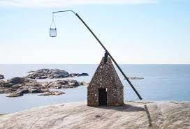

Hobby
One of my greatest passions is Travel, as I love exploring new cultures, cuisines, and landscapes. There's something exhilarating
about embarking on new adventures and creating unforgettable memories in different corners. When I'm not jetting off
to new destinations, I find joy in indulging in two seemingly contrasting hobbies: watching comedy and horror movies. I believe
laughter is the best medicine, and a good comedy film never fails to brighten my day and lift my spirits. On the other hand,
the adrenaline rush and suspense in horror movies captivate me, making for thrilling movie nights. These hobbies add excitement
and diversity to my life,allowing me to unwind and appreciate the wonders of storytelling in both light-hearted and spine-chilling ways

Verdens Ende ("World's End", or "The End of the Earth" in Norwegian) is located at the southernmost
tip of the island of Tjøme in Færder municipality, Norway.
It is composed of various islets and rocks and is one of the most popular scenic spots in the area,
with panoramic views of the Skagerrak and fishing facilities.
It also has a replica of an old Vippefyr, an early type of beacon or lighthouse, erected in 1934.
Learn More

The Big Bang Theory is an American television sitcom created by Chuck Lorre and Bill Prady, both of whom served as executive
producers on the series, along with Steven Molaro.
The three of them also served as head writers. It aired on CBS on September 24, 2007 to May 16, 2019,
running for 12 seasons and 279 episodes
Learn More